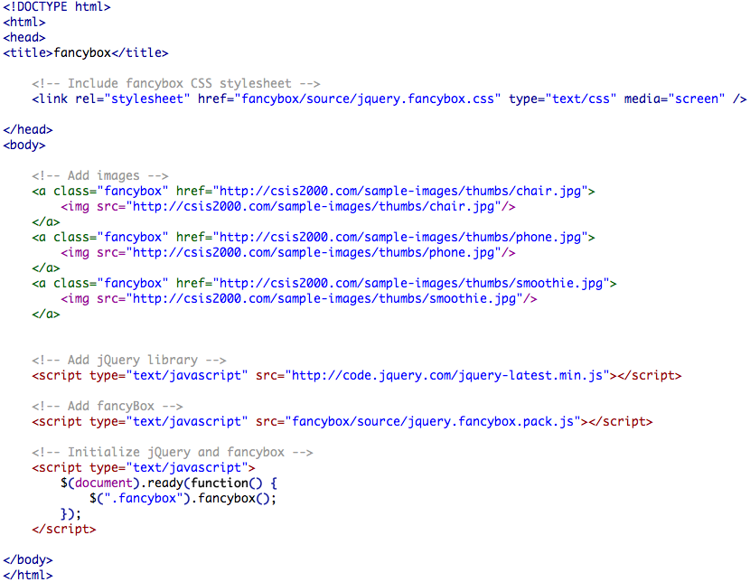

Fancy box exercise
Check out some examples of Fancybox.
- Download the Fancybox javascript library from http://fancyapps.com/fancybox/#license (Links to an external site.) (version 2.1.5 or higher)
- Extract (unzip) the contents of the download into your root folder for this class to a new folder named "fancybox".
- Verify that you can see the "source" sub folder at a path similar to "F://{your-csis2000-folder-name}/fancybox/source"
- Create a new web page, name it "fancybox.html" and save it to your site root folder on your local F drive.
- Add 3 or more image elements to your "fancybox.html" page.
- (For the next few steps you may refer to the image below)
- Add a script reference to the latest jQuery library
- Include the external stylesheet reference for fancybox that you have just downloaded at "/fancybox/source/jquery.fancybox.css"
-
Include a script reference to the external file at "/fancybox/source/jquery.fancybox.pack.js"
- For each image on your page, add a link (using the tag) to the image file and set each link's class="fancybox".
- Add a jQuery ready function that initializes fancybox.
- Optionally add any additional functionality using the options found here: http://fancyapps.com/fancybox/#instructions (Links to an external site.)
Your HTML page should look similar to the following:
